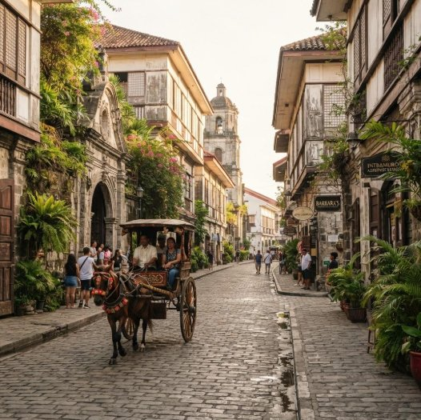

Explore Fort Santiago
Walk through a historic fortress associated with Manila's colonial defenses and the imprisonment of national hero José Rizal.
Explore Fort Santiago →HISTORY & HERITAGE · MANILA
Step into the historic Walled City of Manila, where centuries-old architecture, cultural landmarks, and stories of the Philippines' past come together. Intramuros offers visitors a memorable way to explore the city's heritage while discovering its streets, museums, churches, and historic plazas.
Whether you enjoy history, architecture, photography, or leisurely walks, Intramuros is a destination worth exploring at your own pace.

ABOUT THE DESTINATION
Intramuros, meaning "within the walls," is one of Manila's most important historic districts. Established during the Spanish colonial period, it served as a political, religious, and administrative center.
Its historic character can still be seen in its defensive walls, old gateways, churches, plazas, and preserved buildings. The district also reflects the experiences of Filipinos across different periods of the country's history.
Today, Intramuros welcomes visitors who want to understand the Philippines' past while experiencing its cultural heritage. Exploring on foot is one way to appreciate its architecture and discover notable landmarks along the way.
EXPERIENCE THE PLACE
Walk through a historic fortress associated with Manila's colonial defenses and the imprisonment of national hero José Rizal.
Explore Fort Santiago →Appreciate the architecture and religious heritage of one of Intramuros' most recognized historic landmarks.
Learn about domestic life during the Spanish colonial period through the museum's historic setting and interiors.
Explore cultural collections and exhibitions that provide more context about Philippine history, art, and traditions.
Visit the National Museum →Discover historic gateways, plazas, stone structures, and quieter corners throughout the district.
Capture the district's architectural details, old streets, and historic surroundings while respecting visitors and restricted areas.
PLAN YOUR VISIT
Intramuros, Manila, Philippines
Historic district, cultural destination, and heritage site
Allow around 3–5 hours for a general walking visit. Consider spending a full day if you plan to enter several museums and attractions.
Morning or late afternoon is a good option for outdoor exploration. Avoid the hottest part of the day when possible.
Hours vary by attraction. Check the schedule of each landmark or museum before visiting.
Walking around the district and entering individual attractions may have different costs. Some museums and sites charge admission.
Intramuros can be reached by public transportation, taxi, or ride-hailing services. Check your preferred route and drop-off point before departure.
Heritage walks, museum visits, sightseeing, historical learning, and photography.
Comfortable walking shoes, drinking water, sun protection, and a camera or phone.
Before you go: Opening hours, entrance fees, and visitor policies may change. Check the official Intramuros Administration directory for current information about individual sites.
MAKE THE MOST OF YOUR VISIT
Begin with Fort Santiago to learn about its historical significance and connection to José Rizal.
Continue through nearby streets, plazas, and historic structures. Take breaks and allow time to appreciate the surroundings.
Choose an attraction based on your interests and confirm its opening schedule before heading there.
Finish your walk with photographs, a meal, or a short break before leaving the district.
TRAVEL SMART
SHARE YOUR DISCOVERY
Know a place in Manila that deserves to be discovered? Share your recommendation for a future travel guide.
This is a demonstration form. It will need a backend or form service to actually collect and store submissions.
CONTINUE EXPLORING